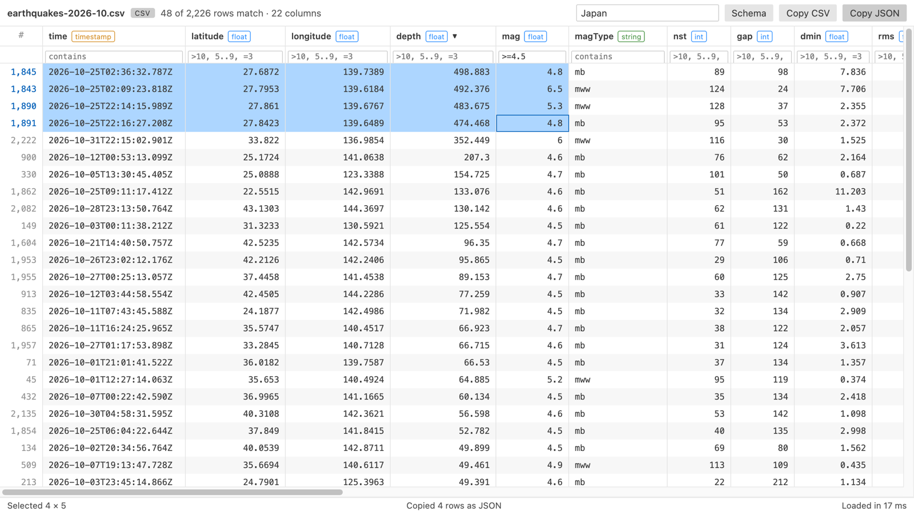

Open files in VS Code and Cursor / Tables and data
See a CSV file as a table in VS Code
VS Code opens CSV files as plain text. Pick the tool by what you need. Rainbow CSV colors each column in the text. Edit CSV gives you a grid to edit in. Table Viewer opens a read-only table you can sort and filter, and it stays fast at 1,000,000 rows. CSV files keep opening as text by default, so editing still works.
Free, MIT license. Extension ID zovo.table-viewer-vscode, version 0.5.5. Needs VS Code 1.90.0 or newer.

Steps in VS Code
- Install Table Viewer from the Marketplace, or press Ctrl+P (Cmd+P on macOS) and run
ext install zovo.table-viewer-vscode. - Open the
.csvor.tsvfile. - Click the table icon at the top right of the editor, or right-click the file and pick "Open in Table Viewer".
- Sort by clicking a header. Filter with the row under the headers. The delimiter is detected for you.
- Leave it open while a script writes to the file: the table reloads and keeps your sort and filters.
Steps in Cursor, Windsurf or VSCodium
- Open the Extensions view with Ctrl+Shift+X (Cmd+Shift+X on macOS).
- Search for
zovo.table-viewer-vscodeand click Install. Cursor, Windsurf and VSCodium install from Open VSX, where it is published aszovo/table-viewer-vscode. - If your editor has no gallery, download the .vsix from the Open VSX page and run "Extensions: Install from VSIX...".
- Then use it the same way as in VS Code.
What Table Viewer handles
- Comma, tab, semicolon and pipe files (.csv, .tsv, .tab, .psv).
- In the README test, a 1,000,000 row CSV of about 30 MB loaded in 0.5 s and sorted in about 0.2 s.
- Copy a selection as CSV, JSON or TSV. A cell panel shows long values and JSON in full.
- Compare the file with Git HEAD in the diff view.
What it does not do
- Read-only. Use the text editor or Edit CSV to change values.
- CSV and TSV files up to 512 MB by default. Grid cells show 2,000 characters, and the cell panel shows the rest.
Other options
- Rainbow CSV (
mechatroner.rainbow-csv, 25 million installs, on Open VSX). Its own description: "Highlight CSV and TSV files, Run SQL-like queries." Stays in the text editor. - Edit CSV (
janisdd.vscode-edit-csv, 2.5 million installs, on Open VSX). Its own description: "extension to edit csv files with a table ui". - Spreadsheet Viewer (
GrapeCity.gc-excelviewer, 6.8 million installs, on Open VSX). Opens CSV and XLSX files in a grid.
Install counts and Open VSX status were checked on 8 November 2026. Descriptions in quotes are the extensions' own.
Questions
How do I make CSV files always open as a table?
Right-click the tab, choose "Reopen Editor With...", then "Configure default editor for '*.csv'" and pick Table Viewer. You can switch back the same way.
Can I run SQL on a CSV file?
Rainbow CSV has SQL-like queries. Table Viewer filters per column but has no SQL today.
Does it send my data anywhere?
No. Table Viewer makes no network requests and has no telemetry.
More about Table Viewer
Read the Table Viewer page for every feature and setting, or the source code on GitHub.
Related guides
- XLSX, Excel, CSV & Parquet Viewer on the VS Code Marketplace (also on Open VSX). Opens xlsx, xls, csv and parquet files as a sortable table with SQL filters.
- Open an Excel .xlsx file in VS Code
- Open an Excel file in Cursor
- Open a Parquet file in VS Code
- Query Excel with SQL
Zovo Pro and support
Zovo Pro: USD 19 once, every Zovo viewer. It turns on the Pro tools in this extension and in the other Zovo extensions you use. The free features stay free.
After a card payment your license key shows on the next page. Paste it with the command "Zovo Pro: Enter a key".
You can also support the work with no Pro:
Need your format supported?
Open a format request with a sample file, and I reply there whether it can be done. For USD 299 once, through this GitHub Sponsors tier, I add your file format or a missing feature to this extension, with tests, within 7 days.